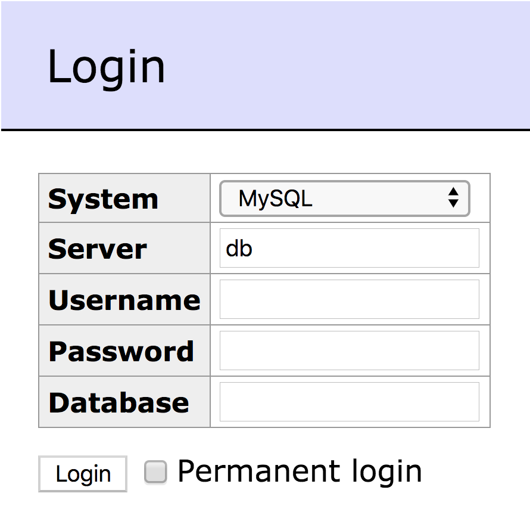
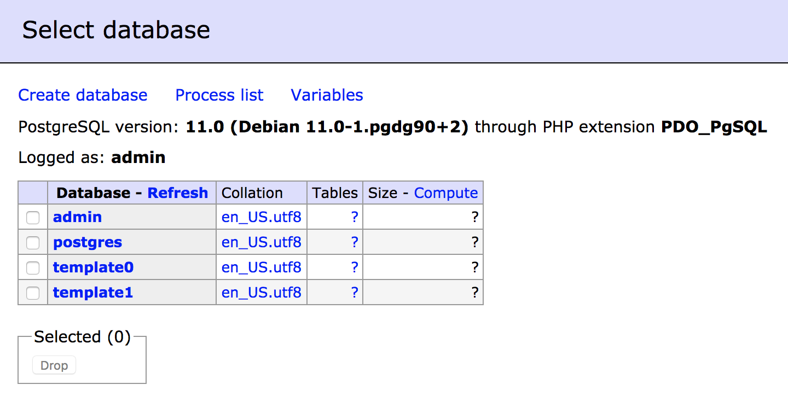

Secrets
In this exercise, we'll learn how to manage secrets and see different use cases where secrets present a secure and straightforward solution.
In this exercise, we'll deploy an application that include two services:
- a Postgres service
- a user interface service to manage the database service
In order to access and manage the database in a secure way, we'll pass sensitive information to the db service via secrets. We'll do this within a Docker Swarm, then within a Kubernetes cluster.
Using Secrets with a Docker Stack
Setting up the Stack
Secrets are managed in Docker by Swarm's management consensus; as such, initialize a swarm on
ucp-manager:[centos@ucp-manager ~]$ docker swarm initOn the swarm manager
ucp-manager, create astack.ymlwith the following content:version: '3.7' services: db: image: postgres environment: POSTGRES_USER: admin POSTGRES_PASSWORD_FILE: /run/secrets/postgres_pwd secrets: - postgres_pwd ui: image: adminer ports: - 8080:8080 secrets: postgres_pwd: external: trueOur stack includes the two services mentioned above:
dbis based on apostgresimage. It requires credentials: a user which valueadminis hardcoded in the yaml file, and a password that we'll pass in a secret file.uiis based on a database management interface calledadminer. This service exposes port 8080.
Additionally, our
stack.ymlincludes a secret set to an external resource, which means this secret should be already defined when we deploy the stack. So let's create the secret in the next step.Create a secret to securely register and distribute our password:
[centos@ucp-manager ~]$ echo "mysecretpassword" | docker secret create \ postgres_pwd -
Deploying the Stack
Now from the directory where
stack.ymlresides, deploy the stack:[centos@ucp-manager ~]$ docker stack deploy -c stack.yml my_stack Creating network my_stack_default Creating service my_stack_db Creating service my_stack_adminerIn your browser, visit
<ucp-manager public IP>:8080to see the login page provided by Adminer./
Enter the necessary information:
- System: PosgreSQL
- Username: admin
- Password: mysecretpassword (or the password you entered above)
Then click on Login.
If everything is set correctly, you should be able to see a page similar to the following screenshot, where you can explore existing default databases and you can create a new database.
/
Clean up by deleting your stack:
[centos@ucp-manager ~]$ docker stack rm my_stack
Using Secrets in Kubernetes
In this second part, we'll use secrets in a Kubernetes deployment in the same context we had in the previous section.
Prerequisites
For the next tasks, we need a kubernetes cluster where we're able to schedule pods on at least one of the cluster nodes. We can again use Minikube on our infra node.
Setting up the Deployment
Let's start by making a directory and cd'ing into it:
ubuntu@infra:~$ mkdir my-secrets; cd my-secretsWe start by creating a secret:
Create a file
secret.ymlwith folowing content:apiVersion: v1 kind: Secret metadata: name: postgres-pwd type: Opaque data: password: mysecretpasswordThis will create a secret called
postgres-pwdthat includes a password data.Note: Of course it's not recommended to store the secret data in plain text. We do this here only for the exercise purpose.
Run following command to create the secret:
ubuntu@infra:~/my-secrets$ kubectl apply -f secret.ymlCreate a file
kube.ymlthat defines the deploymentmyappwhich includes 2 containersdbandui:apiVersion: extensions/v1beta1 kind: Deployment metadata: name: myapp labels: app: myapp spec: replicas: 1 selector: matchLabels: app: myapp template: metadata: labels: app: myapp spec: containers: - name: db image: postgres env: - name: "POSTGRES_USER" value: admin - name: "POSTGRES_PASSWORD" valueFrom: secretKeyRef: name: postgres-pwd key: password - name: ui image: adminer ports: - containerPort: 8080dbis is based on the imagepostgresand requires two environment variables (user and password). The user is passed in plain text, while the password gets its value from the secretpostgres-pwd.uiis based on the imageadminerand exposes the port 8080. To expose this port externally, we will create a NodePort service later.
Deploying the Application
Run the deployment:
ubuntu@infra:~/my-secrets$ kubectl create -f kube.ymlCheck whether the pods are started correctly:
ubuntu@infra:~/my-secrets$ watch kubectl get podsAfter a while you should see something similar to this:
NAME READY STATUS RESTARTS AGE myapp-fffbc69-c5ngz 2/2 Running 0 66sExit with
CTRL+C.Now let's make our application accessible to the outside world:
ubuntu@infra:~/my-secrets$ kubectl expose deployment myapp \ --type=NodePort --name=my-serviceGet the node port being used for port exposure:
ubuntu@infra:~/my-secrets$ kubectl get services my-serviceYou should see an output similar to this:
NAME TYPE CLUSTER-IP EXTERNAL-IP PORT(S) AGE my-service NodePort 10.110.79.34 <none> 8080:30130/TCP 11sThe port node in my case in
30130.Visit the Adminer UI in your browser on following address
<ucp-manager>:<service-port>. You should see the login form:/
Both container
dbanduiare running in the same pod. That means they can communicate usinglocalhost. The default TCP port exposed in our case is5432. Now you can login using following information:- System: PosgreSQL
- Server: localhost:5432
- Username: admin
- Password: mysecret (or the password you entered above)
Then click on Login.
You should be able to see the existing databases.
Clean up:
ubuntu@infra:~/my-secrets$ kubectl delete secret postgres-pwd ubuntu@infra:~/my-secrets$ kubectl delete deployment myapp ubuntu@infra:~/my-secrets$ kubectl delete service my-service
Optional: Using Secrets with a GitHub Access Token
In this exercise, we'll build an app that consumes GitHub's API. In order to make authenticated requests, we'll provision the app with an auth token protected by Docker's secrets functionality.
The project folder for this exercise is ~/ddev-labs/secrets.
Setting up a demo
Inspect
secrets/app.py, a minimal Flask app to send a request to GitHub's API:from flask import Flask, render_template import requests, json, os app = Flask(__name__, template_folder='.') @app.route('/') def homepage(): r = requests.get( 'https://api.github.com/user/repos' ) return render_template('repos.html', repos=json.loads(r.text)) if __name__ == '__main__': app.run(host='0.0.0.0', debug=True)repos.htmldumps whatever it is handed to a webpage:<html> <body> <div>{{repos}}</div> </body> </html>Dockerfilecontains the minimal steps necessary to stand up your Flask app:FROM python:2.7-alpine RUN mkdir /app WORKDIR /app COPY requirements.txt /app/ RUN pip install -r requirements.txt COPY . /app CMD python app.pyBuild and run your new image and expose port 5000:
ubuntu@infra:~/ddev-labs/secrets$ docker image build -t myimage:1.0 . ubuntu@infra:~/ddev-labs/secrets$ docker container run -p 5000:5000 myimage:1.0then in another terminal visit it at
http://localhost:5000:ubuntu@infra:~/ddev-labs/secrets$ curl localhost:5000We get a 'requires authentication' complaint. We don't ever want sensitive information like login credentials written to an image, so we'll use Docker's secrets functionality to securely provision them.
Getting GitHub access credentials
Login to GitHub
Go to the following link: https://github.com/settings/tokens/new
Name your token
secret-demoCheck the
public_repobox. This token will only be authorized to interact with public repos.Click "Generate Token". Your token is created and presented; make sure to save this before navigating away from the page, as there is no way to get it back afterwards.
Creating and using a Secret
inita new Swarm on yourinfranode, if you haven't already.Place your secret access token in a file called
mytoken.dat.Create a secret to be encrypted and managed by the swarm:
ubuntu@infra:~/ddev-labs/secrets$ docker secret create access_token mytoken.datModify
app.pyto set the Authorization header.app.pyshould look like this:from flask import Flask, render_template import requests, json, os app = Flask(__name__, template_folder='.') @app.route('/') def homepage(): authtoken = open(os.environ['AUTHTOKEN'], 'r').readline().strip() headers = { "Authorization": "token " + authtoken } r = requests.get( 'https://api.github.com/user/repos', headers=headers ) return render_template('repos.html', repos=json.loads(r.text)) if __name__ == '__main__': app.run(host='0.0.0.0', debug=True)Note our application logic is looking for the auth token it needs in a file at the path indicated by the environment variable
AUTHTOKEN, which we will have to define as part of our application configuration (see below).Since you are starting the service in a swarm, the image has to be reachable from any node. Rebuild your image, and call it
<DockerID>/git_secret:ubuntu@infra:~/ddev-labs/secrets$ docker image build -t <DockerID>/git_secret .Push the image to Docker hub after you build it:
ubuntu@infra:~/ddev-labs/secrets$ docker image push <DockerID>/git_secretLaunch your application as a service, mount your secret into it, and define the environment variable your application expects:
[centos@ucp-manager ~]$ docker service create \ --secret access_token \ -e AUTHTOKEN='/run/secrets/access_token' \ -p 5000:5000 <DockerID>/git_secretVisit your application at
localhost:5000. This time, the application successfully authenticates and a json description of all your repositories is presented.Stop your service.
Mocking Secrets
As we saw above, secrets are mounted by the Swarm manager into a file inside your container at /run/secrets/secret_name. During development, we might not run Docker Swarm Mode on our development laptop, and therefore need to mock the presence of a secret in a container locally.
Turn off swarm mode on
infra:ubuntu@infra:~$ docker swarm leave --forceWrite a
docker container run...command to run yourgit_secretimage as a single container with the secret it expects mocked. Think about what you know about mounting files inside a container's filesystem to achieve this. Once the container is running, make sure you get the behavior you expect.Delete the container once it is working correctly.
Using Secrets in Kubernetes
Open the file
kube.yamlandkube-ns.yamland analyze their content. Specifically pay attention to how the secret is defined.Build and push an image based on the Dockerfile in the
secretsdirectory (make sure you're logged in to Docker Hub):ubuntu@infra:~/ddev-labs/secrets$ export DOCKER_ID=<your DOCKER ID> ubuntu@infra:~/ddev-labs/secrets$ docker image build \ -t ${DOCKER_ID}/ddev-secrets-kube:1.0 . ubuntu@infra:~/ddev-labs/secrets$ docker push ${DOCKER_ID}/ddev-secrets-kube:1.0Use
kubectlto create the namespace on Minikube:ubuntu@infra:~/ddev-labs/secrets$ kubectl create -f kube-ns.yamlUse
kubectlto create the secret:ubuntu@infra:~/ddev-labs/secrets$ kubectl create -n ddev secret generic github-token \ --from-file=./mytoken.datCreate the application using the secret on Minikube:
ubuntu@infra:~/ddev-labs/secrets$ kubectl create -f kube.yamlTest the application:
ubuntu@infra:~/ddev-labs/secrets$ export KUBE_IP=$(minikube ip) ubuntu@infra:~/ddev-labs/secrets$ export APP_PORT=$(kubectl get -n ddev svc/app \ --template '{{range .spec.ports}}{{.nodePort}}{{end}}') ubuntu@infra:~/ddev-labs/secrets$ curl ${KUBE_IP}:${APP_PORT}you should see a list of your GitHub repositories formatted as JSON string.
Cleanup:
ubuntu@infra:~/ddev-labs/secrets$ kubectl delete ns/ddevOn GitHub, navigate to
https://github.com/settings/tokensand delete the dummy token you made for this exercise.
Conclusion
In this exercise, you created a simple application that needs sensitive information in the form of an auth token. You provisioned this auth token without ever including it in your image via Docker's secrets functionality, and saw a typical pattern of using secrets in application logic:
- Application logic consumes secret from a file with path set in an environment variable
$FOO $FOOis set to/run/secrets/secret_namein the service definition (at the command line as above, or in adocker-compose.yml), since this is where the Swarm manager will mount the secret calledsecret_name.
By following this pattern, you can use Docker to store encrypted secrets in the Swarm manager group, and pass them encrypted over the network to the containers that need them at runtime.
Next, you saw a typical pattern for mocking secrets in development. Simply place your secret in a file, mount it in the container at the same route the Swarm manager would, and your application logic can consume it in the same way.
All enterprise grade orchestrators provide similar secrets functionality; secrets can be provisioned in much the same way in Kubernetes as they were in a Swarm.